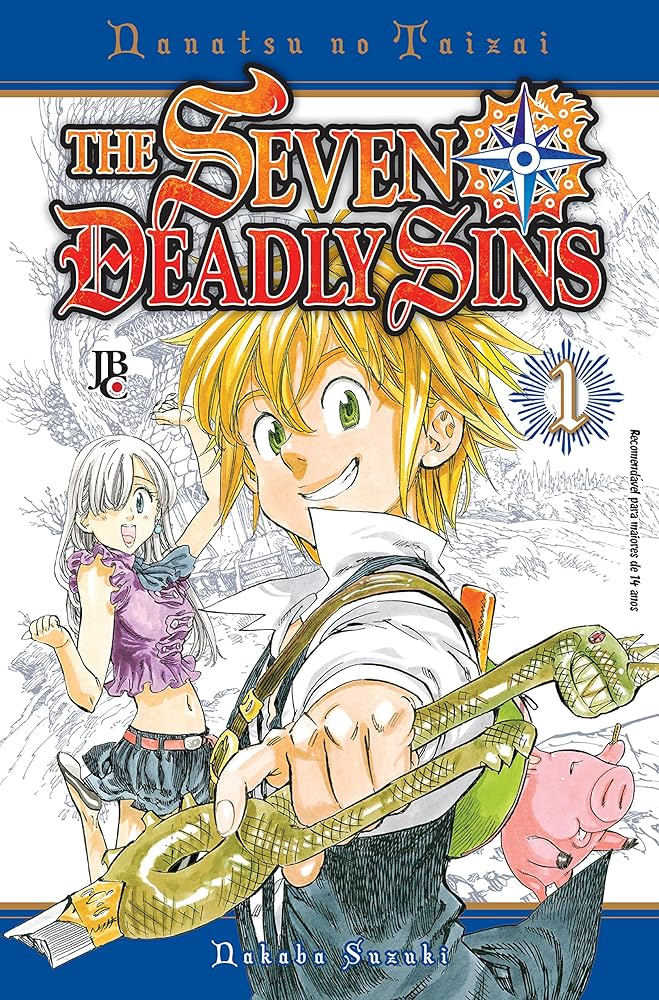

The Seven Deadly Sins Vol 1
Nanatsu no Taizai é um anime/mangar sobre um grupo de cavaleiros chamado os Sete Pecados Capitais, que foram acusados de trair o reino de Liones e foram banidos. Dez anos depois, os Cavaleiros Sagrados tomam o poder, forçando a princesa Elizabeth a encontrar os Pecados Capitais para se unirem e recuperarem o trono do malfeitor e dos Cavaleiros Sagrados que se tornaram tiranos.
Onde comprar ← Voltar para Mangás